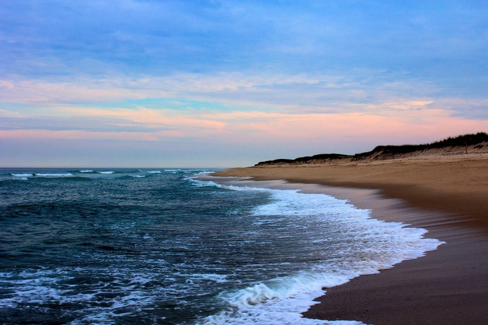
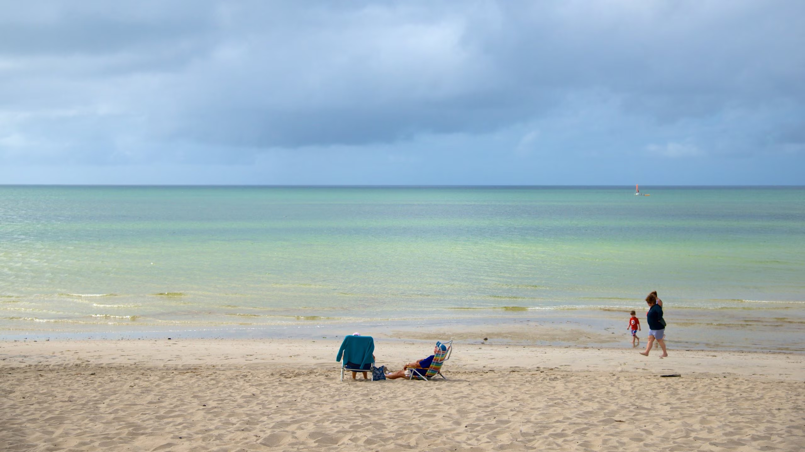
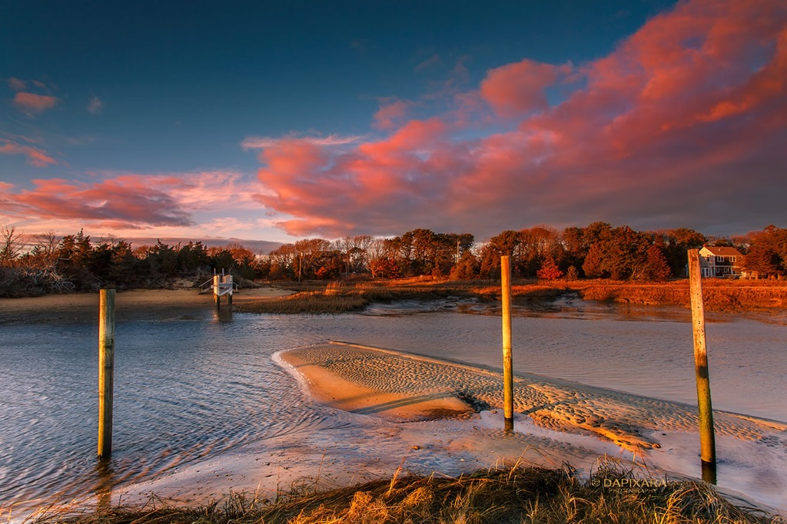

Top Beaches & Spots in Orleans, Cape Cod
Located on the mid-to-outer arm, Orleans offers a perfect combination of local culture, outdoor activities, and in my opinion, the best beaches. Whether you're looking for calm walks along the shore, having a more active family-friendly beach, or more lowkey sunset trips, Orleans is the place to be as it offers all of this and more with its beaches. Nauset Beach is the perfect spot for those looking to see the Cape’s coastline and have a classic beach day. When visiting, you can expect to see people surfing, fishing, and swimming in the water, even though it’s cold. Skaket Beach offers a completely different environment with shallow waters and small waves. This beach is perfect for families with young kids or anyone seeking a more laid-back beach day and warmer water. Located on the bay side of Orleans, the beach is perfect for paddleboarding, skimboarding, or walking at low tide on the sandbars. Last but not least is Rock Harbor, which is a quiet and small harbor with a beach. It is an ideal spot for sunsets. The harbor’s location along the water provides a great community of visitors looking to watch the sunset. It can get buggy, so go in August. Overall, Orleans offers a beach for every type of person and these are my best beach recommendations!
- Nauset Beach - perfect for surfing, fishing, and sunrise walks 
- Skaket Beach – a calm and shallow beach on the bay side 
- Rock Harbor – smaller harbor with amazing sunsets 